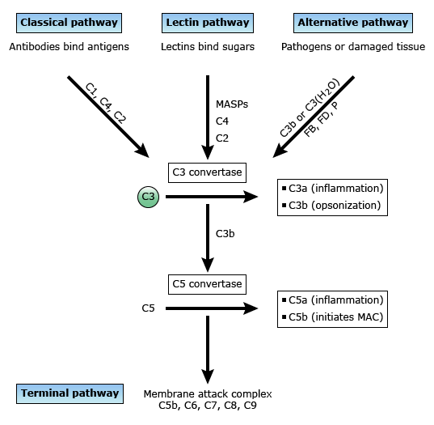

There are three major independent yet overlapping pathways for complement activation. In the classical pathway, immune complexes (Ag-Ab complexes) bind C1 via its C1q subcomponent, while its C1s protease subunit cleaves C4 and C2. The large C4b fragment binds to a target and subsequently captures the large fragment of C2 (C2b). This bimolecular complex forms an enzyme (the C3 convertase, C4bC2b) that cleaves C3 to C3b and releases the anaphylatoxin, C3a. The binding of C3b to the convertase (C4bC2bC3b) generates the C5 convertase.
The lectin pathway is an analogous system, except that the initiating step is the binding by lectins to repetitive sugars on microbial surfaces. MASPs take the place of the C1 proteases.
The alternative pathway (AP) continuously self-activates at a low level (a process called C3 tickover) to generate C3b that deposits on pathogens or debris. C3b or C3(H2O) engages the alternative pathway components, factors B (FB) and D (FD), to form a C3 convertase (C3bBb), which in turn cleaves more C3 to C3b. The binding by another C3b to the C3 convertase generates the C5 convertase (C3bBbC3b). Properdin (P) is a positive regulator that stabilizes both the AP C3 and C5 convertases. The latter subsequently cleaves C5 to release the potent anaphylatoxin C5a, while C5b engages the terminal pathway and initiates the formation of the lytic membrane attack complex (MAC). The complement system is designed to function most efficiently on a biologic membrane.